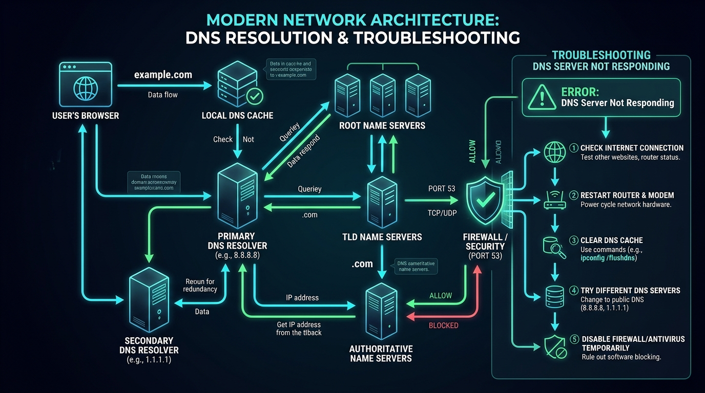

How to Fix "DNS Server Not Responding" Error on Windows & Mac (2026 Guide)
A practical diagnostic guide to clearing broken domain name resolution, unblocking port 53, and configuring enterprise public DNS resolvers.

You attempt to visit a website in Google Chrome, Microsoft Edge, or Safari, and the browser stalls with a spinning loader before displaying: "DNS Server Not Responding" or ERR_NAME_NOT_RESOLVED. When you run Windows Network Diagnostics, it spits back the generic conclusion: "Your computer is trying to use a DNS server that is incorrect or doesn't exist."
Yet, your Wi-Fi icon shows full strength, and messaging apps like WhatsApp or Zoom might still connect. Why does this happen? The Domain Name System (DNS) is the telephone directory of the global internet. When DNS fails, your computer can reach raw numerical IP addresses, but it cannot translate human letters (like eebii.com) into destination web servers.
Why DNS Queries Fail in Office and Home Networks
When your browser attempts to load a website, it sends an outbound UDP or TCP request over Port 53 to your assigned DNS resolver. The resolution pipeline breaks down due to three primary causes:
- ISP DNS Server Outage: Telecom internet providers (like Airtel, Jio, BSNL, Comcast, or Vodafone) run regional recursive DNS nodes that frequently succumb to high query volume, DDoS reflection attacks, or configuration routing updates.
- Poisoned or Stale Local Host Cache: If an IP address for a domain changed, but your operating system or browser cache retained the obsolete IP, subsequent requests fail.
- Antivirus / Firewall Port 53 Blocking: Third-party security suites (such as Norton, McAfee, or Avast) often flag rapid DNS packet exchanges as malware command-and-control traffic, silently dropping outbound DNS packets.
Step 1: Clear the Two-Tier DNS Cache (Windows & Browser)
Both your Windows operating system and modern Chromium browsers maintain separate, isolated DNS caches. You must purge both:
Part A: Flush the Windows OS DNS Cache
Open Command Prompt as Administrator (Win + X -> Terminal / CMD as Admin) and execute:
ipconfig /flushdnsipconfig /registerdns
/flushdns clears the local memory cache; /registerdns immediately refreshes dynamic DHCP registrations and establishes new DNS leases with active domain controllers.
Part B: Clear Google Chrome & Edge Host Cache
- In your Chrome or Edge address bar, navigate to:
chrome://net-internals/#dns(oredge://net-internals/#dns). - Click the clear button: "Clear host cache".
- Next, navigate to:
chrome://net-internals/#socketsand click "Flush socket pools".
Step 2: Switch to Enterprise Public DNS Resolvers
Relying on your default internet service provider's DNS is the single biggest cause of recurring browsing errors. Migrating your network adapter to enterprise-grade public DNS provides 99.99% uptime, DNSSEC cryptographic verification, and lower latency:
| DNS Provider | Primary IPv4 | Secondary IPv4 | Primary Key Advantage |
|---|---|---|---|
| Google Public DNS | 8.8.8.8 |
8.8.4.4 |
Global Anycast presence, unmatched global routing speed. |
| Cloudflare 1.1.1.1 | 1.1.1.1 |
1.0.0.1 |
Fastest raw DNS response time worldwide (< 14ms) + strict privacy. |
| Quad9 Security DNS | 9.9.9.9 |
149.112.112.112 |
Real-time automated blocking of known phishing and malware domains. |
Configuring Public DNS in Windows 11 / 10:
- Press
Win + R, typencpa.cpl, and press Enter. - Right-click your active connection (Wi-Fi or Ethernet) and select Properties.
- Select Internet Protocol Version 4 (TCP/IPv4) and click Properties.
- Select Use the following DNS server addresses:
- Preferred DNS server:
8.8.8.8 - Alternate DNS server:
1.1.1.1
- Preferred DNS server:
- Check the box: "Validate settings upon exit" and click OK.
Step 3: Verify Firewall UDP/TCP Port 53 Traffic
DNS lookups operate fundamentally over UDP port 53 (and TCP port 53 for responses larger than 512 bytes). If your office firewall or third-party antivirus software blocks this port, no DNS query will ever succeed.
To test if your computer can reach Google DNS over port 53, run a quick PowerShell test:
Test-NetConnection -ComputerName 8.8.8.8 -Port 53
If the output returns TcpTestSucceeded : True, your physical and network connection to the DNS resolver is healthy. If it returns False, your antivirus firewall (e.g. Norton/Kaspersky) or router firewall is actively intercepting and dropping port 53 requests. Temporarily disable third-party firewall shields to verify.
Step 4: Disable Ghost Virtual Network Adapters
If you have software installed such as VMware, VirtualBox, Docker Desktop, or old VPN clients, Windows creates virtual network bridge adapters (like vEthernet, VirtualBox Host-Only Ethernet, or TAP-Windows Adapter).
Windows occasionally attempts to route physical internet DNS lookups through these internal virtual adapters. When the virtual adapter fails to respond, your browser throws "DNS Server Not Responding".
- Press
Win + R, typencpa.cpl, and press Enter. - Review the list of adapters. Right-click any unused VPN TAP adapters, Hyper-V virtual switches, or VirtualBox adapters.
- Select Disable for each unused virtual adapter.
- Restart your primary web browser and reload the page.
Step 5: Router-Level DNS Configuration
Rather than configuring DNS manually on every individual phone, laptop, and tablet, you can configure Google or Cloudflare DNS directly inside your main router:
- Open your browser and enter your router gateway IP (typically
192.168.1.1or192.168.0.1). - Log in with your administrator credentials.
- Navigate to Network / WAN Settings or DHCP Server Configuration.
- Locate the DNS Server / Nameserver fields.
- Replace the default ISP entries with
8.8.8.8(Primary) and1.1.1.1(Secondary). - Save and reboot the router. Every connected device in your office will automatically inherit reliable, lightning-fast DNS resolution.
Frequently Asked Questions (FAQ)
Q: Why does DNS fail on one website, but work on others?
If popular sites like YouTube or Google load fine, but a specific website triggers "DNS Server Not Responding", the failure is on the target website's nameservers (such as their Cloudflare, GoDaddy, or Route 53 DNS records failing to propagate or their domain registration expiring).
Q: Will changing to Google or Cloudflare DNS make my internet faster?
Yes. While it won't change your raw download speed (e.g. 100 Mbps), it dramatically reduces the initial latency when clicking links. Instead of waiting 150ms for a congested ISP DNS server to locate a domain, Cloudflare or Google resolves the query in 5ms to 15ms, making website browsing feel significantly snappier.
Upgrade Your Corporate Network Security
Eebii provides managed DNS filtering, enterprise firewall installations, and IT consulting to protect your business network against cyber threats.